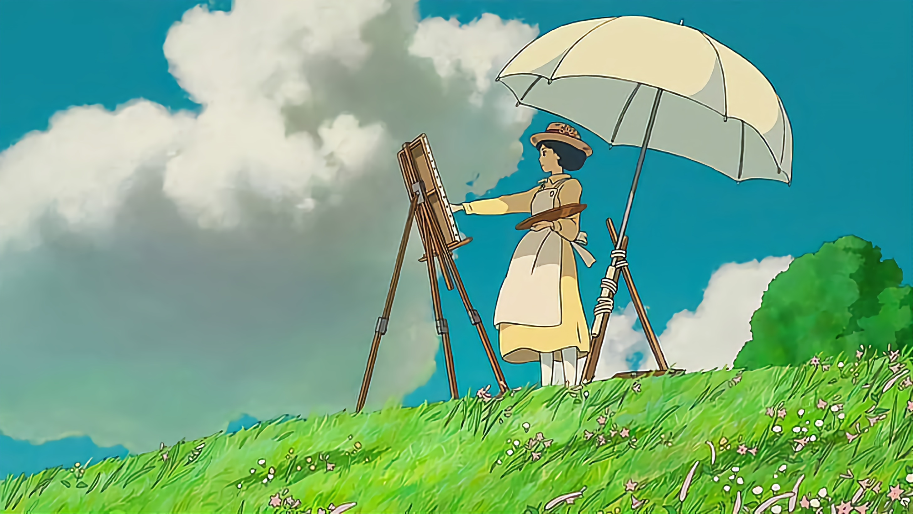
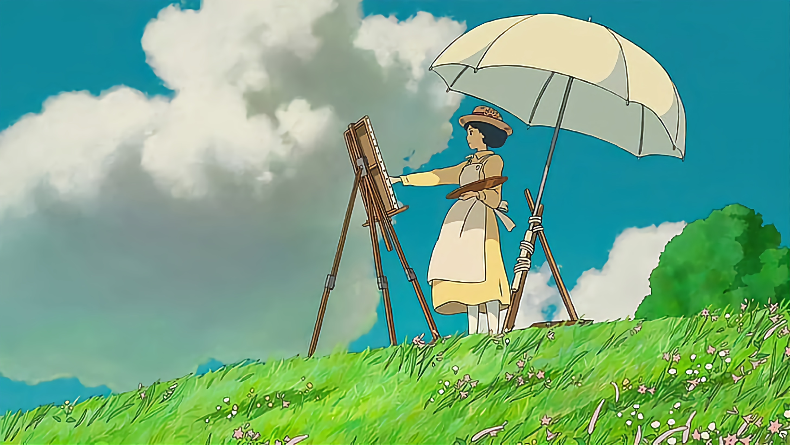

La animación del Studio Ghibli es conocida por su belleza visual y atención meticulosa al detalle. Cada fotograma está cuidadosamente elaborado para transmitir emociones y contar historias de manera única. La combinación de animación tradicional y técnicas modernas da como resultado un estilo inconfundible que ha influido en la industria.
Una de las características distintivas de las películas del Studio Ghibli es su profundo respeto y conexión con la naturaleza y la cultura japonesa. A menudo, las películas incorporan elementos de la mitología japonesa, así como una apreciación por la belleza de la naturaleza. Esto se refleja en la atención meticulosa a los entornos y paisajes en cada película.
Aunque el Studio Ghibli tiene sus raíces en Japón, sus películas han trascendido barreras lingüísticas y culturales para ganar seguidores en todo el mundo. Su habilidad para abordar temas universales y emociones humanas ha llevado a que sus obras sean apreciadas en todos los rincones del planeta.
A lo largo de los años, el Studio Ghibli ha dejado una marca indeleble en la industria del cine y en el corazón de sus espectadores. Su enfoque en la creatividad, la narración poderosa y la exploración de la condición humana ha influido en generaciones de cineastas y artistas. El legado del Studio Ghibli seguirá inspirando a futuros creadores y deleitando a audiencias de todas las edades.
El Studio Ghibli ha sido galardonado con numerosos premios a lo largo de los años, incluidos premios de la Academia. Su impacto en la animación y el cine en general ha sido ampliamente reconocido, lo que demuestra la influencia duradera que han tenido en la industria.

 
